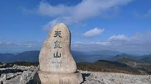

천황산(天皇山)은 대한민국 경상남도 밀양시와 울산광역시 울주군의 경계에 있는 높이 1,189.0m의 산이다. 일부 산악인들은 재약산을 재약산 수미봉으로 천황산을 재약산 사자봉으로 부르고 있다.정상 좌표는 35.55792N, 128.97224E 정상에서 북쪽과 서쪽은 급경사를 이룬 데 반해 동쪽 일대는 비교적 완만한 경사로 고원을 이루기도 하였다. 정상 부근의 거대한 암벽들은 천길 벼랑을 만들며 북쪽 기슭엔 엄청난 너덜벌이 쏟아져 내리다가 얼음골을 만들고 동쪽 125만평의 광활한 사자평고원지대를 뒤덮은 억새군락은 정말 장관중의 장관을 이룬다
